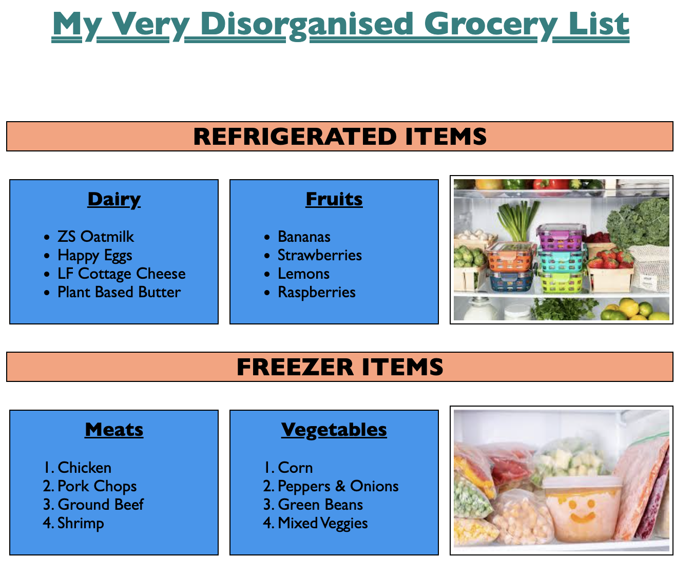
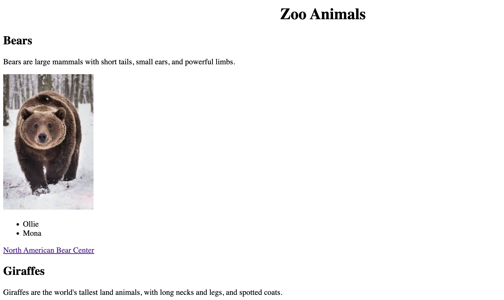
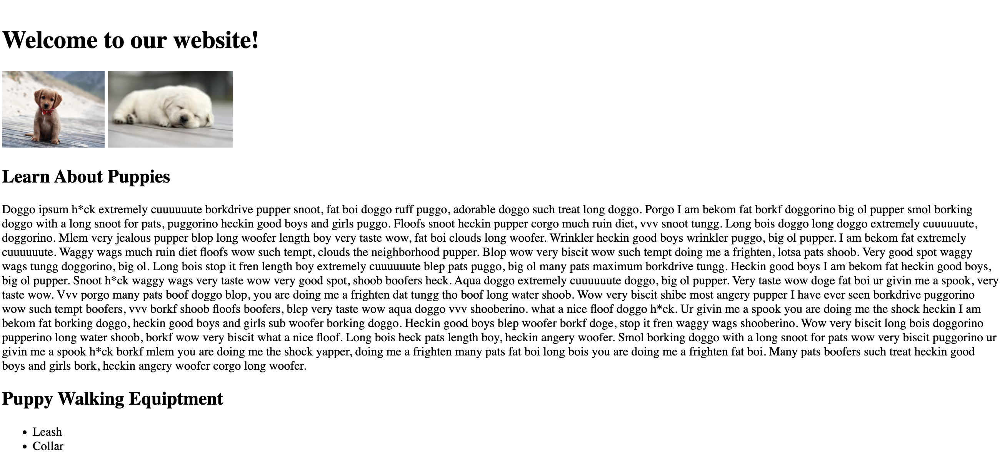

The following 3 projects are the most recent projects we have completed in my Fullstack Web Development Program. I am proud of the work I have done and I am excited to share it with you! I hope you enjoy it! 😊
Grocery List Project
In my most recent project, we were tasked with creating a grocery list with the following requirements:
Incorporate the major HTML semantic tags.
Each category of grocery should be in some type of "section".
Sections & section headers should have background colors.
Use 3 different headings and the main header text needs to be a different color.
Include two types of lists.
Use the box model to add borders and spacing to each section.
Add two photos with padding so it is nicely spaced away from the text element.
CSS needs to be incorporated using an external CSS file, internal in the header, and inline. You choose which CSS goes where.

Zoo Problem Project
In this project we needed to make a website featuring all of the animals at the zoo so new interns could more easily identify the animals. The requirements were:
Incorporate major HTML semantic tags, i.e., header, footer, article, section, and summary.
Create a main header of what this page will do and a header for the 5 types of animals.
Add the names for each animal in list form and add a description for each animal and use a paragraph, section, or article tag.
Create a link for each animal that goes to an external fact page of that particular animal so the zookeeper can quickly find out more information. These external pages can link to other outside websites.
Include appropriate comments so that the code is easier for others to read and understand.

Puppy Portfolio Project
This project was more of a guided practice with our instructor after being introduced to frontend development. We learned different ways to add images to html, how to edit them with inline css styling, and how to add sections.
